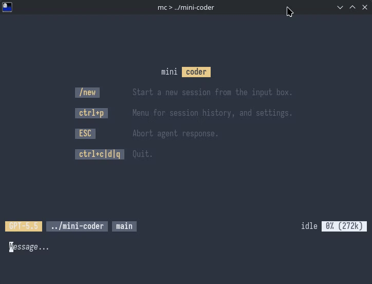

shell
Runs shell commands in the session directory and returns stdout, stderr, and exit code. Large output is truncated as a safety guard against context blowups.
Lightning fast coding agent for your terminal.

mini-coder narrows the focus to one job: being a good coding agent in the terminal. Instead of owning every layer itself, it leans on proven dependencies, keeps the codebase flat and simple, treats the agent workflow as the focus, optimizes for startup and turn latency, and streams progress end-to-end.
/undo.
There is no hard step limit. The loop continues until the model reaches a normal stop or you interrupt it.
Runs shell commands in the session directory and returns stdout, stderr, and exit code. Large output is truncated as a safety guard against context blowups.
Performs exact-text replacement in a single file. It fails deterministically if the target is missing or ambiguous, and it can create new files when needed.
Reads PNG, JPEG, GIF, and WebP files as model input. Only registered when the active model supports images.
Plugins can add more tools, but the core stays intentionally small:
shell and edit do the real work, and
readImage appears only when it is useful.
~/.agents/ for global instructions.
/skill:name injects a skill body into
the next user message.
The UI is a three-zone terminal layout: a scrollable conversation log, a divider that animates while the agent is working, and a multi-line input with a one-line status bar.
/.
:q exits cleanly./skill:name prepends a skill body to the next user
message.
Forked session. note.
mini-coder also supports a non-interactive one-shot mode for scripts and benchmark harnesses.
$ mc -p "summarize this repo"
$ printf '%s\n' 'fix the failing tests' | mc-p/--prompt is provided or when stdin or stdout is not
a TTY.
-p; headless mode
will not fall back to an interactive prompt.
/skill:name, and standalone image paths use the same
parser as the TUI.
done, error,
or aborted outcomes.
/session
history for that working directory.
/model, /session, and /help
are not available in headless mode.
mini-coder persists data under ~/.config/mini-coder/.
Sessions live in mini-coder.db, and global defaults live
in settings.json. Session history is stored in SQLite,
prompt history is searchable across working directories, and
cumulative usage is computed from assistant message usage data.
~/.agents/ included for
global instructions.
/skill:name injects a skill directly
into the next user message.
The system prompt also carries the current date, working directory, and git state so the model sees the same situational context you would expect from a good shell prompt.
mini-coder uses pi-ai for provider support, streaming, tool calling, usage tracking, and OAuth, and cel-tui for the terminal UI. That keeps the core focused on agent behavior instead of reimplementing provider glue or terminal rendering.